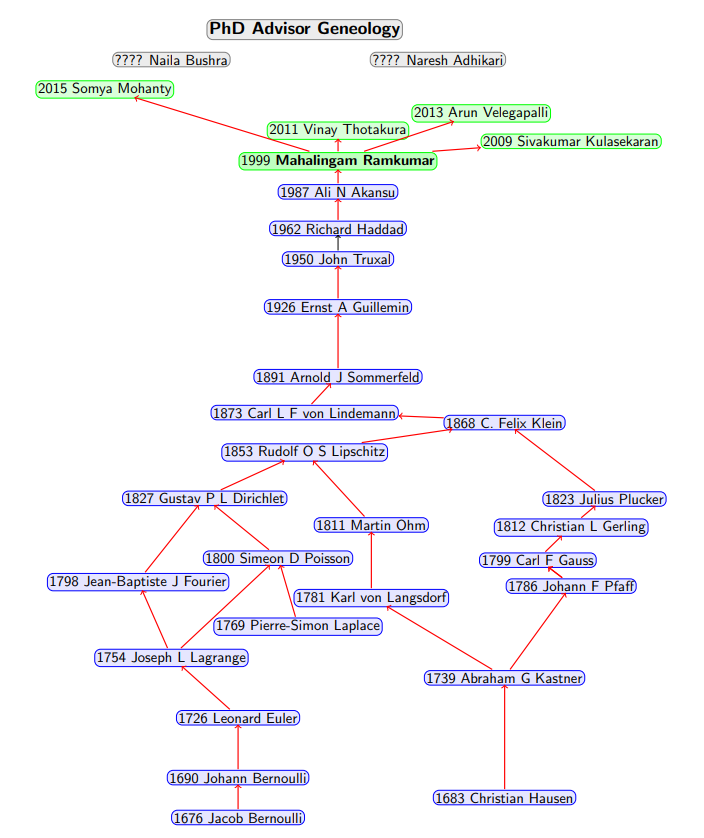

Mahalingam Ramkumar is an Associate Professor of Computer Science at Mississippi State
University. He received his BS from the University of Madras,
India, M.S. from Indian
Institute of Science, Bangalore, India and Ph.D from New Jersey Institute of Technology, Newark,
NJ. His research interests include trustworthy computing, security models, applied cryptography, and
network/system security.
__
MSU Thesis/Dissertation Latex Templates

The Conflict Shoreline